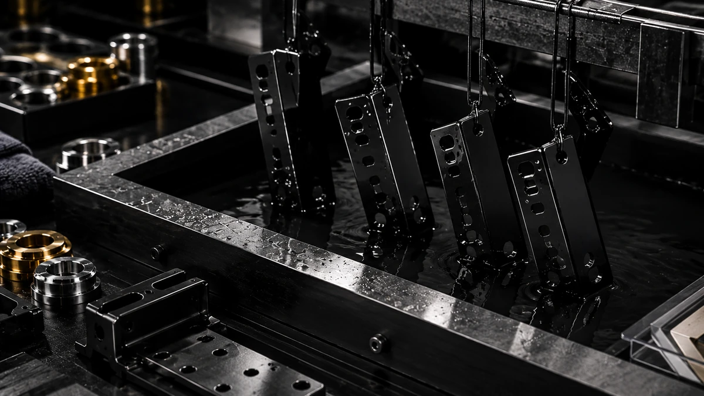

اول نمونه و معیار ثابت
اگر قرار است سفارش در چند نوبت تکرار شود، تعریف مرجع و ثبت انتظار ظاهری قبل از تیراژ اهمیت بیشتری دارد.
مسیر دقیق با نوع خدمت تغییر میکند، اما منطق پروژه ثابت است: ابتدا مسئله را تعریف میکنیم، معیار پذیرش را روشن میکنیم، سپس آمادهسازی، اجرا و کنترل کیفیت انجام میشود.

بهجای اینکه فقط نام عملیات را بدانید، در هر مرحله مشخص میکنیم چه اطلاعاتی لازم است و تصمیم بعدی چیست.
جنس، کاربرد، تعداد، ابعاد، وضعیت سطح، فینیش هدف و ددلاین جمعآوری میشود.
برای رنگ یا پروژه حساس، مرجع فینیش و محدوده انتظار قبل از اجرا روشن میشود.
تمیزی، پولیش، زیرسازی یا حذف آثار سطحی بر اساس وضعیت قطعه تعیین میشود.
فرآیند مناسب با توجه به خدمت انتخابی و پارامترهای پروژه اجرا میشود.
فینیش، یکنواختی و موارد توافقشده پیش از تحویل بررسی میشوند.
سطح نهایی متناسب با حساسیت آن جداسازی و برای حمل آماده میشود.
Brief کاملتر یعنی پیشنهاد مسیر فنی و زمانبندی با ابهام کمتر.
اگر قرار است سفارش در چند نوبت تکرار شود، تعریف مرجع و ثبت انتظار ظاهری قبل از تیراژ اهمیت بیشتری دارد.
وجود خوردگی، خطوخش یا پوشش قبلی میتواند مسیر آمادهسازی و نتیجه قابلدستیابی را تغییر دهد.
برای پروژههایی که اختلاف رنگ کوچک هم مهم است، تصمیم صرفاً بر اساس عکس ریسک بیشتری دارد.
هدف فرآیند خوب، زیادکردن مراحل نیست؛ کمکردن تصمیمهای مبهم است. اگر داده کافی نباشد، بهتر است مسیر به تکمیل اطلاعات یا نمونهسازی برگردد تا اینکه ابهام وارد تیراژ شود.
جنس، وضعیت فعلی سطح، کاربرد و هدف ظاهری باید تا حدی روشن باشند که بتوان گزینههای نامرتبط را کنار گذاشت.
در پروژههای حساس به رنگ یا ظاهر، عکس ممکن است فقط شروع باشد. نمونه فیزیکی یا نمونهسازی میتواند برای تعریف دقیقتر انتظار لازم شود.
قبل از حرکت به اجرا، باید معلوم باشد خروجی بر چه مبنایی بررسی میشود و چه محدودیتهایی از زیرکار یا کاربرد باید در تصمیم لحاظ شوند.
لازم نیست روش پوشش را از قبل بدانید؛ جنس، کاربرد، سطح فعلی و هدف ظاهری برای شروع بررسی کافی است.